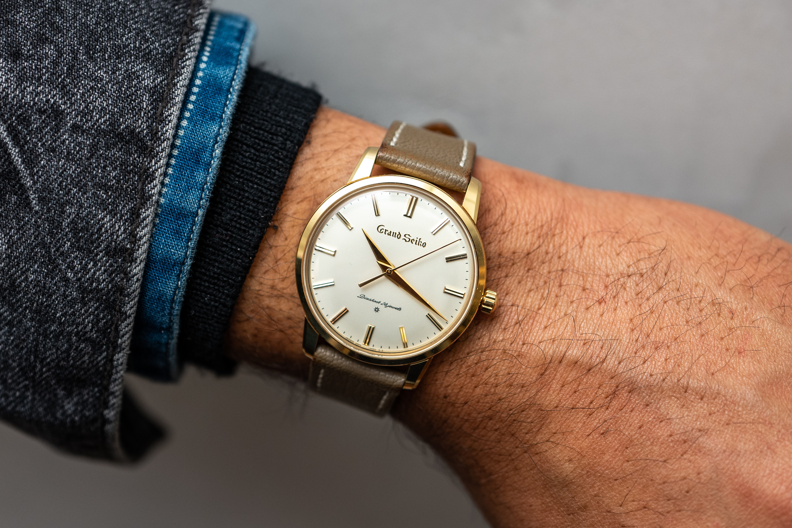

Polo Tommy Hilfiger Para Hombre
Las camisas Tommy Hilfiger son la personificación de la elegancia casual y el estilo sofisticado.
Cada camisa está diseñada con un enfoque en la calidad y la comodidad, lo que las hace perfectas
para cualquier ocasión1. Las camisas Tommy Hilfiger vienen en una variedad de estilos, desde
camisas de vestir hasta camisas Oxford y camisas de manga corta1. Están disponibles en una
variedad de colores sólidos y patrones atractivos1. Además, están hechas de telas ligeras,
transpirables y elásticas1, lo que las hace increíblemente cómodas de llevar.Una característica
destacada de las camisas Tommy Hilfiger es la tecnología TH Flex2. Las camisas TH Flex están
infundidas con un estiramiento de 4 vías para brindar comodidad adicional y movimiento2.
Así que, si estás buscando una camisa que sea versátil, duradera y siempre a la moda, no
busques más allá de las camisas Tommy Hilfiger. Ya sea que estés yendo a la oficina, a una
cena informal o a un evento especial, una camisa Tommy Hilfiger es la elección perfecta para ti.
¡Hazte con tu camisa Tommy Hilfiger hoy mismo

Reloj Fossil para Hombre
Sumergirse en el universo de un reloj Fossil usado, en particular uno de color plateado, es
explorar un matrimonio exquisito entre estilo contemporáneo y funcionalidad atemporal. Con su
caja de acero inoxidable pulido, este reloj evoca una elegancia sutil pero impactante. Cada
línea y curva están meticulosamente diseñadas para crear una armonía visual que no pasa
desapercibida. La esfera plateada, delicadamente adornada con marcadores de hora y agujas
luminescentes, es un lienzo que captura la luz de manera cautivadora, jugando con las sombras y
los reflejos. La correa de acero inoxidable, con sus eslabones bien definidos, ofrece
resistencia y flexibilidad, adaptándose con gracia a la muñeca de quien lo lleva. Cada detalle,
desde el bisel hasta la hebilla, está impregnado de calidad y artesanía. Este reloj, aunque
usado, lleva consigo una historia, cada marca y rasguño cuenta una parte de un viaje personal.
Su aura plateada, a la vez moderna y clásica, lo hace versátil, adecuado tanto para ocasiones
formales como informales. Es más que un accesorio; es una declaración de estilo, una
manifestación de gusto refinado y apreciación por lo excepcional. Con cada tic-tac, este reloj
Fossil usado sigue marcando el tiempo con gracia y distinción, recordando que la verdadera
elegancia es eterna.

Reloj Michael Kors para Mujer
Sumergirse en el universo de un reloj Michael Kors es explorar un matrimonio exquisito entre estilo contemporáneo y funcionalidad atemporal. Con su caja de acero inoxidable pulido, este reloj evoca una elegancia sutil pero impactante. Cada línea y curva están meticulosamente diseñadas para crear una armonía visual que no pasa desapercibida. La esfera plateada, delicadamente adornada con marcadores de hora y agujas luminescentes, es un lienzo que captura la luz de manera cautivadora, jugando con las sombras y los reflejos. La correa de acero inoxidable, con sus eslabones bien definidos, ofrece resistencia y flexibilidad, adaptándose con gracia a la muñeca de quien lo lleva. Cada detalle, desde el bisel hasta la hebilla, está impregnado de calidad y artesanía. Este reloj, aunque usado, lleva consigo una historia, cada marca y rasguño cuenta una parte de un viaje personal. Su aura plateada, a la vez moderna y clásica, lo hace versátil, adecuado tanto para ocasiones formales como informales. Es más que un accesorio; es una declaración de estilo, una manifestación de gusto refinado y apreciación por lo excepcional. Con cada tic-tac, este reloj Michael Kors usado sigue marcando el tiempo con gracia y distinción, recordando que la verdadera elegancia es eterna.

Reloj Grand Seiko para Hombres
El reloj Grand Seiko SBGW252 es una obra maestra de la relojería japonesa que combina elegancia, precisión y artesanía
excepcional. Presenta un diseño clásico inspirado en los primeros relojes Grand Seiko de la década de 1960, con una caja
de acero inoxidable de 37 mm y un dial plateado con marcadores horarios aplicados y agujas en forma de hoja.
En su interior, alberga el calibre manual 9S64, un movimiento de alta calidad desarrollado y ensamblado en la famosa
manufactura de Grand Seiko en Japón. Este movimiento ofrece una reserva de marcha de aproximadamente 72 horas y una
precisión excepcional, certificada por los estándares de Grand Seiko.
El SBGW252 es un homenaje a la tradición relojera de Grand Seiko, con detalles cuidadosamente ejecutados y una atención
meticulosa a la calidad. Es una pieza atemporal que combina la artesanía japonesa con la innovación técnica, perfecta
para los amantes de los relojes que valoran la excelencia en cada detalle.